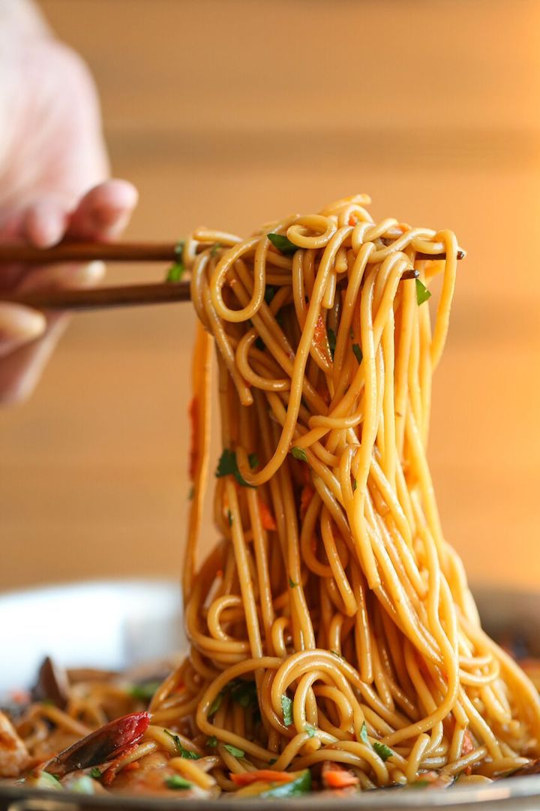

Asian Garlic Noodles

Description
A quick and simple recipe for a very versatile dish.
What You Need
Ingredients
- 8 Ounces spaghetti
- 12 Ounces medium shrimp, peeled and deveined
- 1 Tablespoon olive oil
- 8 Ounces cremini mushrooms, sliced
- 1 Red bell pepper, diced
- 2 Zucchinis, diced
- 1 Carrot, grated
- 2 Tablespoons chopped fresh cilantro leaves
For The Sauce
- 1/3 Cup reduced sodium soy sauce
- 3 Cloves, garlic, minced
- 2 Tablespoons brown sugar, packed
- 1 Tablespoon sambal oelek (ground fresh chile paste), or more, to taste*
- 1 Tablespoon oyster sauce
- 1 Tablespoon freshly grated ginger
- 1 Teaspoon sesame oil
Steps
- In a small bowl, whisk together soy sauce, garlic, brown sugar, sambal oelek, oyster sauce, ginger and sesame oil; set aside.
- In a large pot of boiling salted water, cook pasta according to package instructions; drain well.
- Heat olive oil in a large skillet over medium high heat. Add shrimp and 2 tablespoons soy sauce mixture, and cook, stirring occasionally, until pink, about 2-3 minutes; set aside.
-
Stir in mushrooms, bell pepper, zucchinis and carrot to the skillet. Cook, stirring frequently, until tender, about 3-4 minutes. Stir in spaghetti, shrimp and remaining soy sauce mixture until well combined, about 2-3 minutes.
- Serve immediately, garnished with cilantro, if desired.
Back to the Homepage